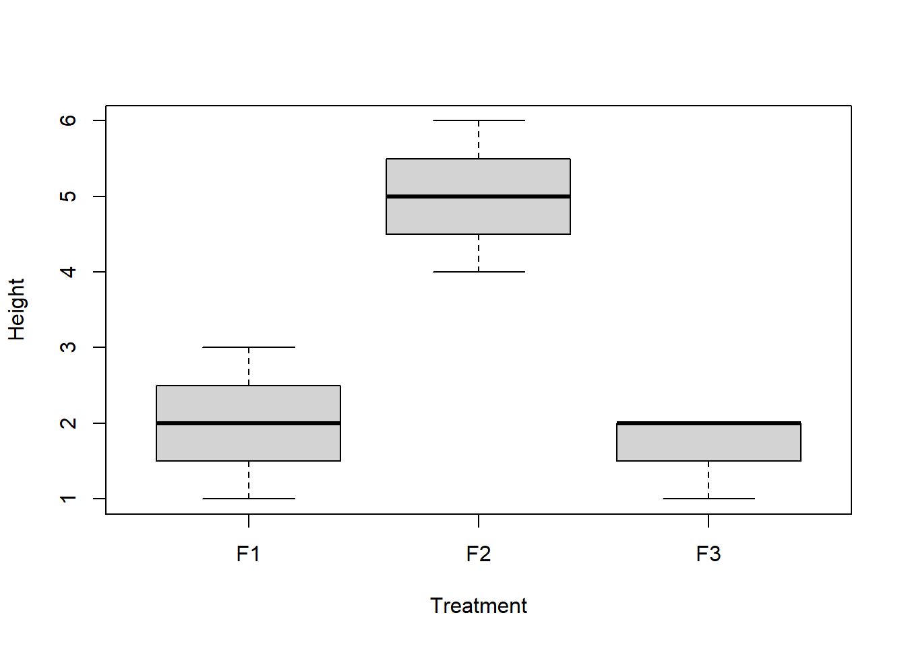
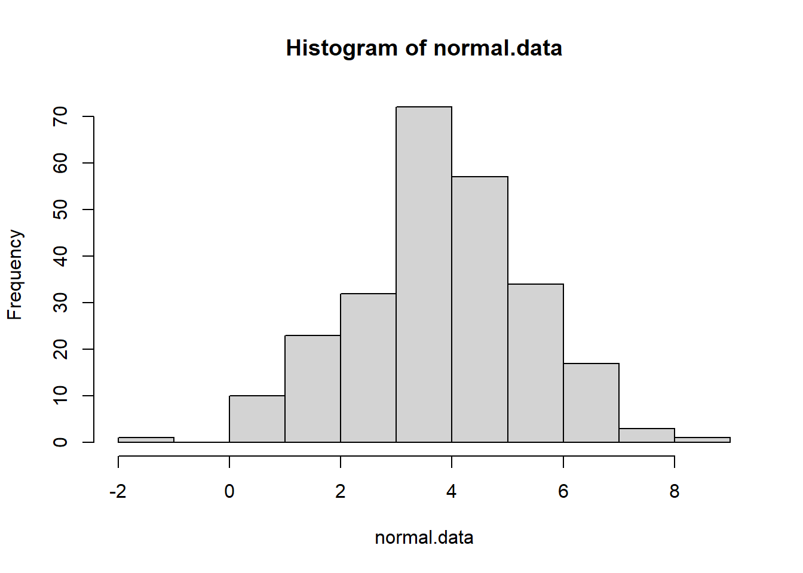
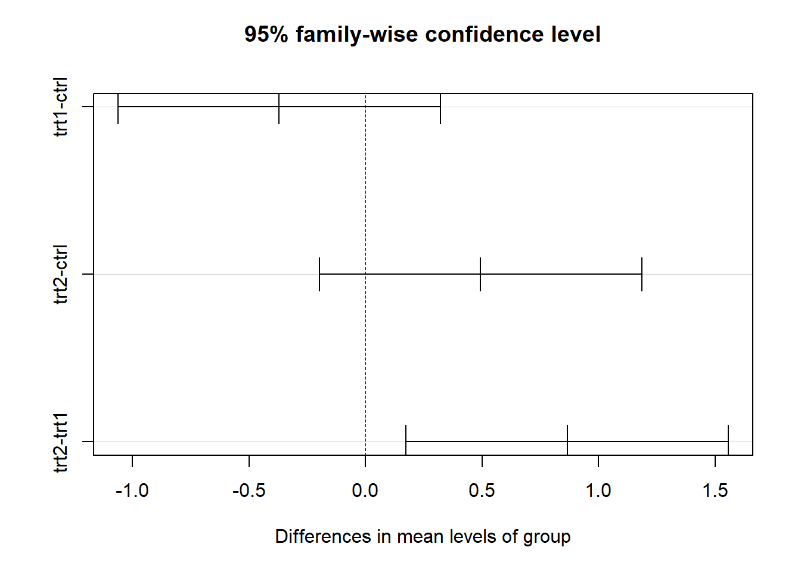
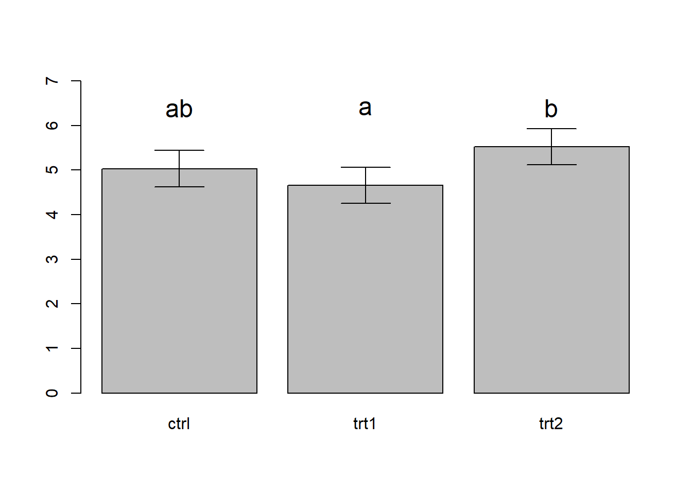

ANOVA: more advanced
NRES 710
Fall 2020
Download the R code for this lecture!
To follow along with the R-based lessons and demos, right (or command) click on this link and save the script to your working directory
Overview: ANOVA
ANOVA is short for “ANalysis Of VAriance”. An ANOVA test is designed to assess whether the mean value is the same across groups defined by one or more categorical predictor variables. Which is another way of saying that ANOVA is a regression model where the predictor variable(s) is categorical.
In a simple linear regression, we are testing whether the mean of our response variable changes linearly across the range of our (continuous/numeric) predictor variable.
In ANOVA, we are testing whether the mean of our response variable changes across the different levels (bins) of our categorical variable.
The null hypothesis in ANOVA is that the mean of the response variable is the same across all levels/bins of your categorical variable – i.e. \(\mu_1=\mu_2=\mu_3=\mu_i\)
Note that if you’re facing a situation where your categorical variable has two groups, you can use EITHER a t-test or an ANOVA. But you should use the t-test – first of all, the t-test works with unequal variance, and second of all, it would just seem strange to run an ANOVA in this case!
In ANOVA, the test statistic is called the F statistic. This is analogous to the t-statistic and the Chi-squared statistic in that it is computed from the data, and that it has a known sampling distribution under the null hypothesis.
Let’s explore this statistic in a little more detail!
The F Statistic
Remember that the t statistic is essentially a signal to noise ratio: you take the signal (difference between the sample mean and the null mean) and divide it by the noise (standard error of the mean).
The F-statistic is also a signal to noise ratio. The F statistic represents the signal (differences among the group means; explained variance) divided by the noise (within-group variability; unexplained variance).
Specifically, the F statistic is defined as:
\(F = \frac{between-group \space variability}{within-group \space variability}\)
The explained variance is defined by:
\(\sum_{i=1}^{K}n_i\cdot (\bar{Y_i}-\bar{Y})^2/(K-1)\)
Where K is the number of groups, \(n_i\) is the number of observations in the ith group, \(\bar{Y_i}\) is the sample mean in the ith group, and \(\bar{Y}\) is the overall mean.
The unexplained variance is defined by:
\(\sum_{i=1}^{K}\sum_{j=1}^{n_i}(Y_{ij}-\bar{Y_i})^2/(N-K)\)
You won’t generally need to compute the F statistic yourself but it is useful to know how to do it! We will go though one example where we compute the F statistic ‘by hand’ (in R), but after that we will let R functions do the job for us!
The F Distribution
The F distribution was developed by George Snedecor (founder of the first US statistics department – at Iowa State. The “F” is in honor of Ronald Fisher, who developed the ANOVA testing framework.
Just like the t distribution and the Chi-squared distribution, the F distribution is the approximate sampling distribution of the F statistic under the null hypothesis.
Interesting fact: in the case where the categorical variable has only two levels, the F distribution is just the t distribution, squared! A t-test shows the areas to the left, right, or center (depending on one- or two-tailed tests), the F distribution (being the square of that) only shows the area to the left of the statistic.
The F distribution has two parameters: the numerator degrees of freedom (df1; also known as the ‘treatment’ degrees of freedom) and the denominator degrees of freedom (df2; also known as the residual degrees of freedom). The numerator degrees of freedom for a one-way ANOVA is K-1, and the denominator degrees of freedom is N-K.
Regression and the F distribution/statistic
What is the F-distribution commonly associated with (besides ANOVA)? That’s right – Linear Regression!
ANOVA is a special case of regression where the predictor variable is categorical – there is one independent variable and one or more dependent variables that are categorical.
Assumptions of ANOVA
Since ANOVA and regression are basically the same thing, the assumptions are also basically the same!
Also note that, like regression and t-tests, ANOVA is reasonably robust against violations of the normal distribution assumption.
Normality
Each sample group is drawn from a normally distributed population.
Independence
Samples are independent of each other (as always!)
Equal variance
All sample groups have the same variance. Note that this is equivalent to the homoskedasticity assumption from linear regression!
Examples
One-way ANOVA ‘by hand’
Let’s look at the following example: we measure the height of some plants under the effect of 3 different fertilizers.
Here the individual observations (\(y_{ij}\)) are a function of the average height of the plants (\(\mu\)) plus the effect of the fertilizer (Ai) plus an error term (Eij)
In comparison with linear regression, let’s write out this model as a linear equation!
\(height_i = \beta_0 + \beta_1\cdot fertilizer2 + \beta_2\cdot fertilizer3 + \epsilon_i\)
Where i is the observation number, beta0 is the intercept, beta1 and beta2 are ‘regression’ coefficients, and fertilizer2 and fertilizer3 are dummy variables or indicator variables that take the value 0 or 1. For example, if observation 11 was treated with fertilizer #2, then the value for ‘fertilizer2’ would be 1 and the value for ‘fertilizer3’ would be zero.
What happened to fertilizer #1 in this example? Well, if observation 5 was treated with fertilizer #1, then the value for ‘fertilizer2’ would be 0 and the value for ‘fertilizer3’ would also be zero. That is, the intercrept (beta0) represents the expected mean for observations treated with fertilizer 1!
Our goal here is to test if the regression coefficients beta1 and beta2 are zero- that is, that mean plant height is the same across all three treatments.
#######
# Simple one-way ANOVA example
F1 <- c(1,2,2,3) # plant height under fertilizer treatment 1
F2 <- c(5,6,5,4)
F3 <- c(2,1,2,2)
# combine into single dataframe for easier visualization and analysis
df <- data.frame(
Height = c(F1,F2,F3),
Treatment = rep(c("F1","F2","F3"),each=length(F1)),
stringsAsFactors = T
)
plot(Height~Treatment, data=df)
Our goal is to assess the plausibility of the null hypothesis that the group means are equal.
grand.mean <- mean(df$Height) # grand mean
group.means <- by(df$Height,df$Treatment,mean) # group means
n.groups <- length(group.means) # number of groups
group.sample.size <- by(df$Height,df$Treatment,length)
sample.size <- nrow(df)
explained.var <- sum(group.sample.size*(group.means-grand.mean)^2/(n.groups-1))
groups <- lapply(1:n.groups,function(t) df$Height[df$Treatment==levels(df$Treatment)[t]])
residual.var <- sapply(1:n.groups,function(t) (groups[[t]]-group.means[t])^2/(sample.size-n.groups) )
unexplained.var <- sum(residual.var)
#######
# now we can compute the F statistic!
Fstat <- explained.var/unexplained.var
Fstat## [1] 24.78947#######
# define degrees of freedom
df1 <- n.groups-1
df2 <- sample.size-n.groups
#######
# visualize the sampling distribution under null hypothesis
curve(df(x,df1,df2),0,10)
######
# compute critical value of F statistic
Fcrit <- qf(0.95,df1,df2)
Fcrit## [1] 4.256495######
# compute p-value
pval <- 1-pf(Fstat,df1,df2)
#####
# use aov function
model1 <- aov(Height~Treatment,data=df)
summary(model1)## Df Sum Sq Mean Sq F value Pr(>F)
## Treatment 2 26.17 13.083 24.79 0.000218 ***
## Residuals 9 4.75 0.528
## ---
## Signif. codes: 0 '***' 0.001 '**' 0.01 '*' 0.05 '.' 0.1 ' ' 1#####
# use lm function
model1 <- lm(Height~Treatment,data=df)
summary(model1)##
## Call:
## lm(formula = Height ~ Treatment, data = df)
##
## Residuals:
## Min 1Q Median 3Q Max
## -1.0000 -0.1875 0.0000 0.2500 1.0000
##
## Coefficients:
## Estimate Std. Error t value Pr(>|t|)
## (Intercept) 2.0000 0.3632 5.506 0.000377 ***
## TreatmentF2 3.0000 0.5137 5.840 0.000247 ***
## TreatmentF3 -0.2500 0.5137 -0.487 0.638128
## ---
## Signif. codes: 0 '***' 0.001 '**' 0.01 '*' 0.05 '.' 0.1 ' ' 1
##
## Residual standard error: 0.7265 on 9 degrees of freedom
## Multiple R-squared: 0.8464, Adjusted R-squared: 0.8122
## F-statistic: 24.79 on 2 and 9 DF, p-value: 0.0002184anova(model1)## Analysis of Variance Table
##
## Response: Height
## Df Sum Sq Mean Sq F value Pr(>F)
## Treatment 2 26.167 13.0833 24.79 0.0002184 ***
## Residuals 9 4.750 0.5278
## ---
## Signif. codes: 0 '***' 0.001 '**' 0.01 '*' 0.05 '.' 0.1 ' ' 1Pairwise comparisons
The ANOVA test is a global test, meaning that if our p-value is less than our alpha level we are able to reject the null hypothesis that all of the group means are equal to one another. But if we reject our null hypothesis we can’t say which of the group means are different.
This is where pairwise comparison comes in. Pairwise comparisons allow you to determine which pairs of means are different from one another.
Remember that if we are unable to reject our null hypothesis, there is no point in performing pairwise comparisons- we already know that the variation in group means is consistent with the null hypothesis that the true population means are not actually different from one another.
There are several ways to perform pairwise comparisons in R. One of the most powerful and flexible functions for doing this is the ‘emmeans’ function.
For classical ANOVA tests, the most common method for pairwise comparison is called ‘Tukey’s test’. This can be done using the ‘TukeyHSD’ function in R or the ‘emmeans’ function.
Tukey’s test
Tukey’s test (or Tukey’s Honestly Significant Differences [HSD]) compares all possible pairs of group means and determines if each pair is more different than could reasonably be expected under the null hypothesis.
Tukey’s test assumes that observations are normally distributed. In addition, Tukey’s test assumes independence of observations (of course!) and homogeneity of variance among groups.
The test statistic for Tukey’s test is called q, and is computed as:
\(q = \frac{Y_A-Y_B}{SE}\), where Y sub A is the larger of the two means being compared.
Does this look like any other familiar test statistic? Yes, that’s right- Tukey’s test is essentially a t-test!
The standard error for Tukey’s test is computed as:
\(\sqrt{(\frac{MSE}{2})(\frac{1}{n_i}+\frac{1}{n_j})}\)
With unequal sample sizes, the test is called a Tukey-Kramer test.
Tukey test example
Lets’ try it!
######
# Tukey's test
# find critical q-value for tukey test
q.value <- qtukey(p=0.95,nmeans=n.groups,df=(sample.size-n.groups))
# find honestly significant difference
tukey.hsd <- q.value * sqrt(unexplained.var/(sample.size/n.groups))
# if differences in group means are greater than this value then we can reject the null!
## let's look at the difference between means
all_means <- tapply(df$Height,df$Treatment,mean)
all_levels <- levels(df$Treatment)
pair_totry <- matrix(c(1,2,1,3,2,3),nrow=3,byrow = T)
pair_totry # these are the pairwise comparisons to make!## [,1] [,2]
## [1,] 1 2
## [2,] 1 3
## [3,] 2 3thispair <- pair_totry[1,] # run first pairwise comparison
dif.between.means <- all_means[thispair[1]]-all_means[thispair[2]]
dif.between.means # since this is greater than tukey.hsd, we already know we can reject the null## F1
## -3### compute p-value!
sample.size.pergroup <- sample.size/n.groups
std.err <- sqrt(unexplained.var / 2 * (2 / sample.size.pergroup))
# first compute q statistic
q.stat <- abs(dif.between.means)/std.err
p.val <- 1-ptukey(q.stat,nmeans=n.groups,df=(sample.size-n.groups))
p.val## F1
## 0.0006459124## run all pairwise comparisons
results <- NULL
i=1
for(i in 1:nrow(pair_totry)){
thispair <- pair_totry[i,]
temp <- data.frame(
group1 = all_levels[thispair[1]],
group1 = all_levels[thispair[2]]
)
temp$dif = all_means[thispair[1]]-all_means[thispair[2]]
temp$qstat = abs(temp$dif)/std.err
temp$pval = 1-ptukey(temp$qstat,nmeans=n.groups,df=(sample.size-n.groups))
results <- rbind(results,temp)
}
results## group1 group1.1 dif qstat pval
## 1 F1 F2 -3.00 8.2589664 0.0006459124
## 2 F1 F3 0.25 0.6882472 0.8792868263
## 3 F2 F3 3.25 8.9472136 0.0003591856######## compare with R's built in tukey test function
model1 <- aov(Height~Treatment,data=df)
TukeyHSD(model1)## Tukey multiple comparisons of means
## 95% family-wise confidence level
##
## Fit: aov(formula = Height ~ Treatment, data = df)
##
## $Treatment
## diff lwr upr p adj
## F2-F1 3.00 1.565743 4.434257 0.0006459
## F3-F1 -0.25 -1.684257 1.184257 0.8792868
## F3-F2 -3.25 -4.684257 -1.815743 0.0003592####### and finally, compare with 'emmeans'
library(emmeans)## Warning: package 'emmeans' was built under R version 4.0.3model1 <- lm(Height~Treatment,data=df)
emm <- emmeans(model1,specs=c("Treatment")) # compute the treatment means with 'emmeans'
pairs(emm) # run tukey test!## contrast estimate SE df t.ratio p.value
## F1 - F2 -3.00 0.514 9 -5.840 0.0006
## F1 - F3 0.25 0.514 9 0.487 0.8793
## F2 - F3 3.25 0.514 9 6.327 0.0004
##
## P value adjustment: tukey method for comparing a family of 3 estimatesNote that the last method (‘emmeans’) is the most flexible, since you can use this function for all kinds of models, including mixed models!
Another simple example
Here we run another example (drawn from this site), just using R’s built in functions (no more ‘by hand’ calculations!):
library(agricolae)## Warning: package 'agricolae' was built under R version 4.0.3data("PlantGrowth")
plant.lm <- lm(weight ~ group, data = PlantGrowth) #run the 'regression' model
plant.av <- aov(plant.lm) # run anova test and print anova table
plant.av## Call:
## aov(formula = plant.lm)
##
## Terms:
## group Residuals
## Sum of Squares 3.76634 10.49209
## Deg. of Freedom 2 27
##
## Residual standard error: 0.6233746
## Estimated effects may be unbalanced#######
# evaluate goodness of fit (assumption violations etc)
layout(matrix(1:4,nrow=2,byrow = T))
plot(plant.av)
#######
# run pairwise comparisons
tukeytest <- TukeyHSD(plant.av)
tukeytest## Tukey multiple comparisons of means
## 95% family-wise confidence level
##
## Fit: aov(formula = plant.lm)
##
## $group
## diff lwr upr p adj
## trt1-ctrl -0.371 -1.0622161 0.3202161 0.3908711
## trt2-ctrl 0.494 -0.1972161 1.1852161 0.1979960
## trt2-trt1 0.865 0.1737839 1.5562161 0.0120064layout(matrix(1,nrow=1,byrow = T))
plot(tukeytest) #default plotting method for tukey test objects!
######
# alternative method
# run tukey test
emm <- emmeans(plant.lm,specs=c("group")) # compute the treatment means with 'emmeans'
pairs(emm) # run tukey test!## contrast estimate SE df t.ratio p.value
## ctrl - trt1 0.371 0.279 27 1.331 0.3909
## ctrl - trt2 -0.494 0.279 27 -1.772 0.1980
## trt1 - trt2 -0.865 0.279 27 -3.103 0.0120
##
## P value adjustment: tukey method for comparing a family of 3 estimatestoplot <- as.data.frame(summary(emm))[,c("group","emmean","lower.CL","upper.CL")]
xvals <- barplot(toplot$emmean,names.arg = toplot$group,ylim=c(0,7))
arrows(xvals,toplot$lower.CL,xvals,toplot$upper.CL,angle=90,code=3)
text(xvals,c(6.4,6.4,6.4),labels = c("ab","a","b"),cex=1.5)
In the above figure, we use the convention of adding letter codes to our plot to illustrate the results of the pairwise comparison. Pairs of treatments/groups with different labels are different according to the pairwise comparison test. Pairs that share a common label are not different. In the above figure, treatment 1 and treatment 2 are different from one another, but the control is not detectably different from either treatment. You can also see this visually based on the overlapping in the confidence intervals (trt1 and trt2 do not overlap, whereas both treatments overlap with the control).